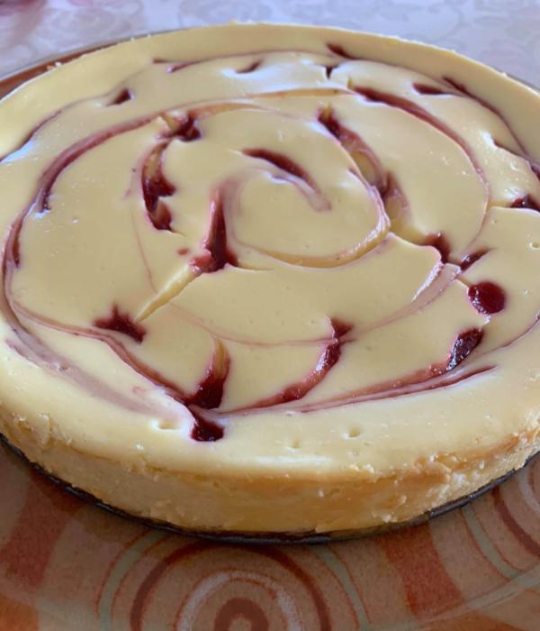

Info
This cheesecake tastes amazing and looks so impressive you won't belive how easy it is to make!
Made by Maryam
Total Time
10 hours (including cooling time)
Servings
10
Ingredients for the Crust
2 1/2 cup
Crushed Graham Crackers
1/2 cup
Sugar
2/3 cup
Butter (unsalted, melted)
Ingredients for the Filling
20 oz
Frozen Sweetened Strawberries
1 tbsp
Light Corn Syrup
24 oz
Cream Cheese
14 oz
Sweetened Condensed Milk
1/4 cup
Lime Juice (doesn't have to be freshly squeezed)
3
Eggs
Directions
Pre-heat oven to 300°, then put all of the crust ingredients in a food processor until finely crushed.
Press crust firmly onto the bottom of a 9-inch springform pan, then refrigerate for 30 minutes.
Pour into a saucepan and bring to a boil. Cook for 2 minutes before covering and putting it in the fridge.
In a large bowl, beat the cream cheese until soft and creamy. Slowly add in the milk and mix until combined.
Add in the lime juice, and each egg gradually. Mix until smooth.
First pour 1/2 of the mixture into the springform pan. Then drop teaspoons of the strawberry mixture in a circular pattern on top of the filling.
Then spoon over the remaining cream cheese mixture to cover all of the strawberry.
Do another layer of strawberry preserve and use a knife to cut through the drops to make the swirl pattern.
Bake at 300° for 50 minutes until the center is set. Cool for 20 minutes and gently run a knife around the edge to loosen.
Cool in the fridge overnight before serving. Enjoy!